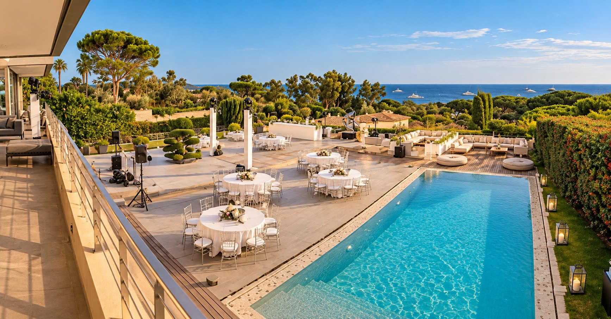
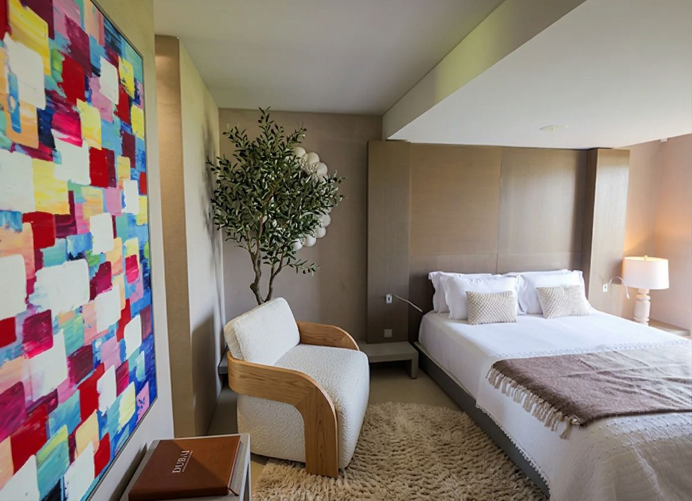
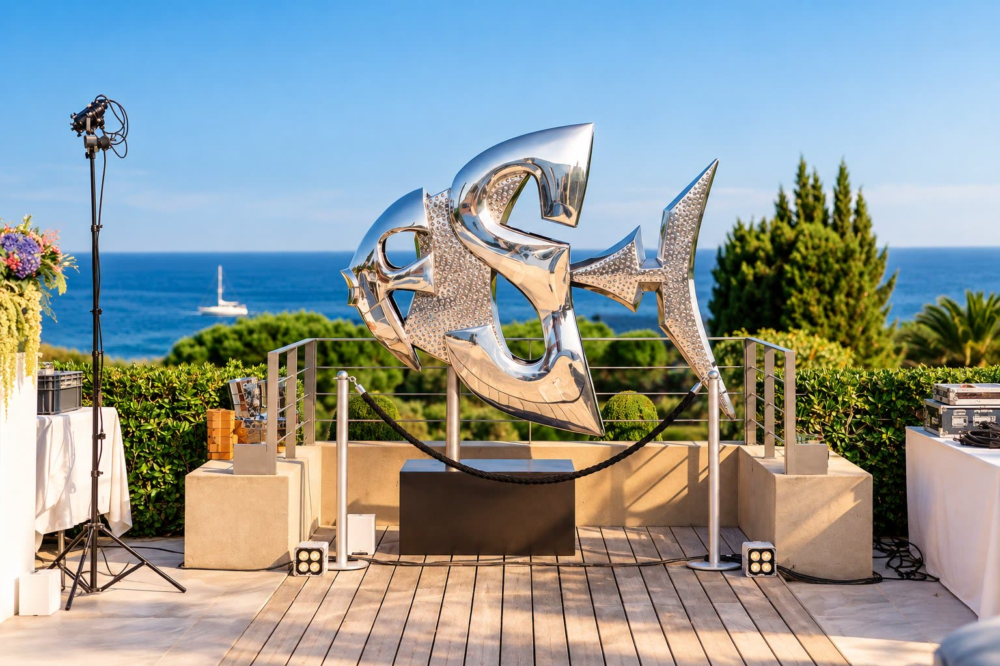
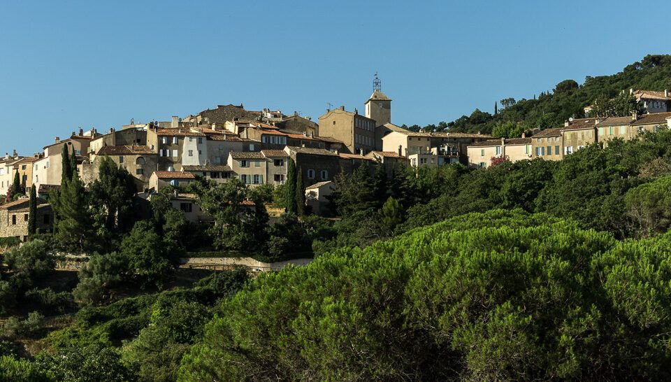
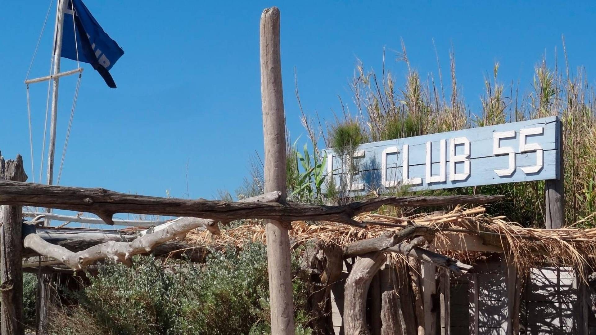

Celebrations
Open to small intimate wedding parties.
The terraces, the pool and the bay set the stage; every detail is arranged privately.
WHISPERED LUXURY
SAINT-TROPEZ
Behind the gates, a 600 m² house opens toward the sea. A private path reaches Pampelonne; a small open-air van waits for the road to Saint-Tropez.
What separates this house is not spectacle but access: the gates close behind you, the garden meets the horizon, and Pampelonne waits at the end of a private path.
Living spaces sit above the pool-facing guest suites, with a separate children’s floor and discreet staff accommodation. The house works as well for a full family gathering as it does for a quiet week.
The master bedroom, salon, dining room and kitchen share the first floor, opening to a sea-view terrace, an exterior dining terrace and the outdoor bar, barbecue and kitchen.

The pool level brings together the gym, spa and hammam, while the en-suite bathrooms include generous showers and two bathtubs.
Pool, pergola, broad terraces and Mediterranean planting unfold toward the sea, moving naturally from shade to open sky.
Four distinct dining areas let each meal find its own light, from the garden and pool to the pergola and the sea-view terrace.
One bar sits beside the pool and outdoor kitchen; the other turns toward the bay for drinks in the last light.
A beautiful green-marbled barbecue area anchors open-air cooking beside the terraces, designed for generous lunches that continue into the evening.
The house can be considered for private parties, intimate wedding celebrations, editorial work and carefully scoped productions.

The terraces, the pool and the bay set the stage; every detail is arranged privately.

Editorial, campaign and production enquiries are reviewed individually before access or dates are discussed.
Walk privately to Pampelonne, linger at Le Club 55 or disappear into old Ramatuelle: the peninsula is close at hand without intruding on the house.

Climb through stone lanes, pause at a shaded café, browse the market and galleries, or stay for an evening performance. The village offers a quieter counterpoint to the beach.
Read the full article
A name woven into the story of Pampelonne since the 1950s: discreet, barefoot and enduring. From the private community, this Riviera institution is comfortably walkable.
Read the full articleInside a gated private community above Pampelonne bay, the residence has private access to the beach within the community. The position is described, never exposed.
Every arrangement begins with a direct conversation. Dates, terms, inclusions and any additional services are confirmed in writing.
Exclusive use of the house, pool, gardens and guest accommodation for one party.
A full-house stay during the Saint-Tropez season, arranged directly with the owner’s office.
Editorial, campaign and production enquiries are reviewed individually before access or dates are discussed.
For travel designers, concierge directors and family offices acting by referral and introduction.
Trade enquiries reach the principal’s desk directly — no relayed chain of communication.
Non-disclosure is available before particulars are released. Client privacy is procedural, not promotional.
Advisor commissions are agreed in writing and protected upon confirmation.
Share the outline of your stay. Your note opens directly with the Concierge Desk on WhatsApp — no automated queue and no public calendar.